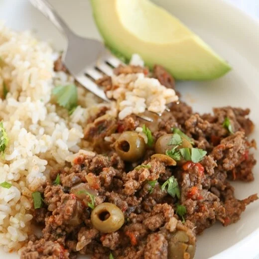

Picadillo

Description
Picadillo is a spicy, flavorful stew or hash of ground meat and vegetables that originated in Latin America. The name comes from the Spanish word picar, which means "to mince". Picadillo is commonly made with beef, but other proteins can be used, and the ingredients vary by region and family.
Ingredients
- 1/2 large chopped onion
- 2 cloves garlic, minced
- 1 tomato, chopped
- 1/2 pepper, finely chopped
- 2 tbsp cilantro
- 1-1/2 lb 93% lean ground beef
- 4 oz tomato sauce, 1/2 can
- kosher salt
- fresh ground pepper
- 1 tsp ground cumin
- 1-2 dried bay leaves
- 2 tbsp pitted green olives
Steps
- Brown meat on high heat in large sauté pan and season with salt and pepper. Use a wooden spoon to break the meat up into small pieces. When meat is no longer pink, drain all juice from pan.
- Meanwhile, while meat is cooking, chop onion, garlic, pepper, tomato and cilantro.
- Add to the meat and continue cooking on a low heat. Add olives or alcaparrado and about 2 to 4 tbsp of the brine (the juice from the olives, this adds great flavor) cumin, bay leaf, and more salt if needed. Add tomato sauce and 1/4 cup of water and mix well. Reduce heat and simmer covered about 20 minutes.